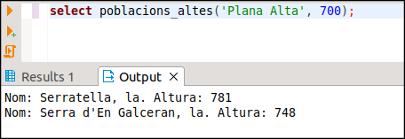
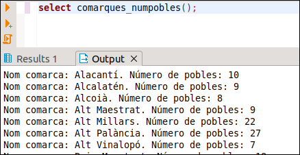
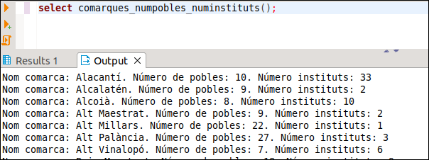

Exercicis de tot el tema
En la Base de Dades geo_grup_9999x :
Ex_1 - Crea una funció anomenada DEU_Q , que traga els números del 1 al 10 i els seus quadrats. (Utilitza RAISE NOTICE).
Ex_2 - Fes una altra funció, IMP , que traga per pantalla els números imparells del 1 al 50. (Utilitza RAISE NOTICE).
Ex_3 - Fes una funció anomenada TAULA_MULT , per a que traga la taula de multiplicar del paràmetre que se li ha de passar. (Utilitza RAISE NOTICE). Aquest podria ser el seu aspecte, en executar-la:

Ex_4 - Fes una funció, anomenada MAX2 , que tinga dos paràmetres numèrics i que torne el màxim entre aquestos dos. (Ara ja no s'ha d'utilitzar RAISE NOTICE).
Ex_5 - Utilitza l'anterior per a crear MAX3. Has d'utilitzar obligatòriament la funció MAX2
Ex_6 - (Voluntari) Fes la funció LAT_A_TEXT , tenint en compte que ha de quedar com en la taula POBLACIONS. Segurament la dificultat més gran serà aconseguir que apareguen les cometes després dels minuts i dels segons.
Ex_7 - Fes una funció anomeneda POBLACIONS_ALTES que accepte 2 paràmetres, el primer de tipus text que serà una comarca, i el segon numèric que serà una altura. Ha de traure les poblacions de la comarca del primer paràmetre que són més altes que el segon paràmetre. Mostrarem el nom de la població i l'altura. Aquest podria ser el resultat en executar-se:

Ex_8 - Fes una funció anomenada COMARQUES_NUMPOBLES sense paràmetres que traga per pantalla les comarques ordenades alfabèticament amb el número de pobles de cadascuna

Ex_9 - Fes una funció anomenada COMARQUES_NUMPOBLES_NUMINSTITUTS sense paràmetres que traga per pantalla les comarques ordenades alfabèticament amb el número de pobles de cadascuna i el número d'instituts. En la consulta tindrem dos dificultats:
- Hem d'agafar totes les poblacions, fins i tot les que no tenen institut
- Com que hem d'accedir als instituts, per a comptar els pobles haurem de comptar els pobles distints, i així si un poble té més d'un institut, no comptar-lo més d'una vegada

Ex_10 - Fes una funció anomenada NUM_HABITANTS_COMARCA que accepte un paràmetre de tipus text, i torne el número d'habitants d'eixa comarca

Ex_11 - Fer la funció COMARQUES_NUMHABITANTS sense paràmetres per a traure per pantalla totes les comarques i el número d'habitants. En la consulta has d'utilitzar obligatòriament la funció anterior

Ex_12 - Crear un trigger anomenat TR_ALT_POS que controle que l'altura d'una nova població siga estrictament positiva. La funció en la qual es basa es pot anomenar ALT_POS.
Ex_13 - Modificar l'anterior per a que ho controle també quan es tracta d'una modificació.
Ex_14 - Crear un trigger anomenat TR_EXT_0_1000 que controle que l'extensió d'un municipi (població) estiga obligatòriament entre 0 i 1000, i ha de ser sempre, tant si s'insereix una nova població com si es modifica. Però en aquesta ocasió, en compte de traure un error, el que farem serà modificar aquest valor: si és major que 1000, li donarem el valor 1000, i si és negatiu li posarem 0. Ho aconseguirem modificant NEW.extensio , i com la funció del trigger torna sempre NEW, doncs agafarà el nou valor. Anomeneu a la funció EXT_0_1000.
Ex_15 - VOLUNTARI. En la taula POBLACIONS3 tenim controlat que la latitud introduïda siga correcta per mig del tipus lat, però no en la taula POBLACIONS, on és de tipus VARCHAR(50) i per tant es podria introduir una latitud incorrecta molt fàcilment. Crea un trigger que controle que quan s'introdueix o es modifica la latitud de POBLACIONS siga correcta. Per a això
- Els caràcter 1 i 2 han de ser els graus , que han d'estar entre 00 i 90
- El caràcter 3 ha de ser º
- Els caràcters 4 i 5 formen els minuts , i han d'estar entre 00 i 59
- El caràcter 6 ha de ser '
- Els caràcters 7 i 8 formen els segons , i han d'estar entre 00 i 59
- El caràcter 9 ha de ser "
- El caràcter 10 ha de ser N o S
- Si no s'acompleix alguna de les restriccions anteriors, ha d'eixir un error dient que la latitud ha d'estar entre 00º00'00"N i 90º00'00"N , o entre 00º00'00"S i 90º00'00"S
Llicenciat sota la Llicència Creative Commons Reconeixement NoComercial CompartirIgual 3.0